Главное
- Елена Петровна родилась в 1907 году в местечке Пуховичи. В войну, с сентября 1942 по июль 1944 года, она была связной партизанского отряда имени Калинина бригады «Правда». В 1946 году её представили к медали «Партизану Отечественной войны» II степени. по документу Точная дата рождения, 9 января 1907 года по новому стилю, известна от семьи. по сведениям семьи
- Её муж — Антон Сильвестрович Неронский (в документах также Ниронский), 1904 года рождения, врач из Пуховичей. Военврач 3 ранга, начальник санитарной службы отряда имени Калинина. Погиб в бою 2 мая 1944 года у деревни Междуречье. Похоронен в Пуховичах в одной могиле с племянником Елены Николаем Линским. подтверждено
- Сестра — Ольга Петровна Линская, 1905 года рождения, тоже из Пуховичей и тоже партизанская связная. Её сын Николай погиб в том же бою, что и Антон. О том, что они родные сёстры, рассказала дочь Елены в газетной статье. Документы с этим согласуются: то же отчество, то же местечко, разница в два года. по рассказу семьи
- Старший брат, по всей видимости, — Пётр Петрович Пархомчик, 1896 года рождения, из местечка Пуховичи. До революции он был типографом, в 1917 году — солдатом автомобильной части Западного фронта. В 1932 году его арестовали и приговорили к пяти годам лагерей, в 1957 году реабилитировали. Совпадают фамилия, отчество и местечко, но документа о родстве нет. вероятно
- Пархомчики жили в самом местечке Пуховичи по меньшей мере с 1799 года. По метрикам прослежены четыре поколения: Стефан (жил в 1806 году) → Матфей (около 1771–1846) → Стефан (1809–1857) и его дети. Это крестьяне, прихожане Рождество-Богородицкой церкви, крепостные пуховичского помещика. по документу Связь этих семей с отцом Елены пока не установлена. не установлено
- В Минской губернии были дворянские роды Неронских, один из них — с собственным гербом. Принадлежал ли к ним Антон Сильвестрович, не установлено. не установлено
Кто она
Елена Петровна Пархомчик родилась 27 декабря 1906 года по старому стилю, то есть 9 января 1907 года по новому, в местечке Пуховичи Игуменского уезда Минской губернии. по сведениям семьи Год и место рождения подтверждает наградной лист 1946 года. [1]вырезкаскан


О её жизни рассказала дочь, Людмила Антоновна, в статье Ольги Савастюк «…родной земле» в районной газете «Пухавіцкія навіны». [2]статья До войны Елена Петровна работала в Минске, в Академии наук, в лаборатории физиологии. В войну была ветеринарным врачом в Пуховичах и держала связь с партизанами: оставляла в условленных местах записки и передавала медикаменты, которые давал районный ветврач И. Я. Казей. Связь с партизанами держала и её родная сестра Ольга.

В 1942 году её муж Антон попал в плен под Вязьмой. Позже семья узнала, что он находится в лагере в Борисове. По словам дочери, Елена Петровна, рискуя жизнью, добилась его освобождения. Немцы поставили условие: он должен был работать у них врачом. Как только он окреп, семья ушла к партизанам. по рассказу семьи
Документы говорят о том же. В наградном листе написано, что «гражданка Неронская Е. П., будучи связной партизанского отряда им. Калинина бригады „Правда“ с IX-1942 г. по 5.7.1944 г., оказывала непосредственную помощь, как то доставляла медикаменты, а также давала сведения о гарнизонах противника м. Пуховичи». Адрес её семьи в 1946 году — «м-ко Пуховичи, ветучасток». [1]вырезкаскан по документу По словам дочери, у Елены Петровны были и другие награды — орден Отечественной войны II степени и медали. [2] по рассказу семьи

Весной 1944 года муж погиб, и она осталась с дочерью и сыном. Жилья в Минске у семьи не было, и в Академию она не вернулась. В Пуховичах ей выделили домик, потом она построила свой. Работала ветврачом, к ней обращались в любое время суток, её отмечали в числе лучших ветврачей республики. В марте 1960 года ей присвоили звание «Заслуженный ветврач БССР» — удостоверение № 3. В домашнем архиве дочери хранятся Почётная грамота Верховного Совета БССР, грамоты Министерства сельского хозяйства БССР и облисполкома. Дочь окончила политехнический институт. [2] по рассказу семьи
По словам дочери, «в один год она потеряла сына, племянника и зятя». Кто именно эти люди и в каком году это случилось, не установлено. Один из племянников, Пётр Линский, погиб в катастрофе в 1957 году. [6] В зрелом возрасте Елена Петровна стала инвалидом второй группы по зрению. Летом к ней приезжала дочь, на зиму увозила её в столицу. «И каким радостным всегда было возвращение в Пуховичи», — заканчивается статья. Дата смерти Елены Петровны не установлена.

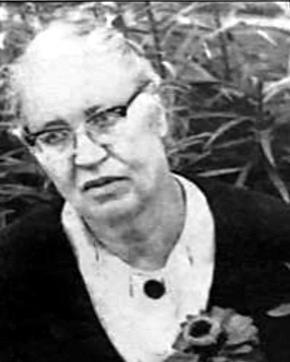
Снимок переснят с газетной страницы; сверху он обрезан так в самой газете.
Муж — Антон Сильвестрович Неронский
Антон Сильвестрович родился в 1904 году в местечке Пуховичи. До войны работал там врачом. В 1932 году Минский райвоенкомат призвал его в армию, звание — военврач 3 ранга. С 15 сентября 1943 года он в партизанском отряде имени Калинина. Погиб 2 мая 1944 года и был похоронен у деревни Междуречье. В графе о родственниках записано: «Минская обл., Пуховичская райветлечебница, жена — Ниронская Елена Петровна». [3]вырезкаскан по документу


В 1946 году Главное управление кадров исключило его из списков как погибшего. В приказе он назван начальником санитарной службы партизанского отряда, а родственницей указана «НИРОНСКАЯ Елена Петровна». [4]вырезкаскан По рассказу дочери, он погиб «при выполнении боевого задания». [2]


Позже его перезахоронили на кладбище в Пуховичах. По паспорту воинского захоронения 1992 года, в этой могиле лежат двое: Неронский Антон Сильвестрович, 1904, и Линский Николай Иосифович, 1925, — сын сестры Елены. Они погибли в одном бою, оба значатся в одном донесении о потерях отряда. [5]вырезкаскан подтверждено


Фамилия в документах пишется по-разному: Ниронский (донесение 1944, приказ 1946) и Неронский (паспорт захоронения 1992, газета). Отчество — Сильвестрович и Селиверстович. Это одно и то же имя в разной записи.
Сестра Ольга и брат Пётр
Родители
Отец Елены — Пётр Пархомчик: так следует из её отчества и девичьей фамилии. Имя матери, годы жизни родителей и дата их брака пока не найдены. Записи о рождении Елены и её сестры хранятся в метрических книгах Пуховичской церкви за 1905–1906 годы в архиве в Минске, онлайн их нет. не установлено
Ольга Петровна Линская (1905)
В 1980 году Ольга Петровна подала документы о признании её участницей партизанского движения, и они сохранились. По личному листку: родилась в 1905 году в местечке Пуховичи, белоруска, телефонистка, до войны — домохозяйка. С мая 1942 по май 1943 года связная отряда имени газеты «Правда», с мая 1943 по июль 1944 года — отряда имени Чапаева бригады «Пламя». [6]вырезкаскан


В боевой характеристике сказано, что она ходила во вражеские гарнизоны, распространяла листовки, собирала сведения в гарнизоне Марьиной Горки, приносила в отряд боеприпасы, винтовочные затворы и медикаменты. Её муж Иосиф Яковлевич Линский был связным того же отряда и умер в 1949 году. Сын Николай Иосифович, партизан, погиб 2 мая 1944 года. Сын Пётр Иосифович погиб в катастрофе в 1957 году. Её награды — медаль «За доблестный труд» (1949), юбилейные медали «30 лет Победы» (1975) и «60 лет Вооружённых сил СССР» (1979). В 1980 году Ольга Петровна жила одна, пенсионеркой, в Пуховичах. [6]вырезкаскан по документу


В газетной статье сестра названа «Ольга Ленская», в документах — Линская. По документам Николай Линский был партизаном отряда имени Чапаева, а в донесении о потерях он записан в отряд имени Калинина, рядом с Антоном Неронским.
Пётр Петрович Пархомчик (1896), по всей видимости — брат
В картотеке потерь Первой мировой войны сохранилась карточка: «Пархомчикъ Петръ Петровичъ», холост, 21 год, русский, православный, рядовой Правления автомобильной части Западного фронта. Место рождения — Минская губерния, Игуменский уезд, Пуховичская волость. Занятие до войны — «типографъ». 2 ноября 1917 года он поступил в госпиталь № 17 Всероссийского земского союза в Орле с неврозом сердца и ослаблением зрения. [7]карточка по документу

В базе «Открытый список» есть Пархомчик Пётр Петрович, 1896 года рождения, уроженец местечка Пуховичи, крестьянин-единоличник. 18 мая 1932 года его арестовали по статье 58 («связь с контрреволюционной организацией, антисоветская агитация»). 23 сентября 1932 года Коллегия ОГПУ приговорила его к пяти годам лагерей. Реабилитирован 19 декабря 1957 года. [8] Год рождения, местечко и отчество в обеих записях совпадают, так что это, по-видимому, один человек. Брат ли он Елены, по документам не доказано. вероятно
Пархомчики местечка Пуховичи
Фамилия Пархомчик (также Пархимчик) — местная для нынешнего Пуховичского района. В XX веке Пархомчики жили в деревнях Синча, Боровая Слобода, Очижа и в самом местечке Пуховичи. [11] Из местечка в Первую мировую ушли на фронт Пётр Петрович и трое братьев Ефимовичей. Виктор Ефимович пропал без вести 30 августа 1914 года, Павел Ефимович — 10 марта 1915 года. Василий Ефимович был ранен 11 августа 1915 года под местечком Визьма. Это возможные двоюродные братья Елены, но их связь с ней не проверена. Их отца Ефима в метриках Пуховичей найти не удалось. [10]
Метрические книги Пуховичской Рождество-Богородицкой церкви сохранились и сфотографированы за 1798–1860 годы. В них по записям 1799–1857 годов видны несколько семей Пархомчиков из самого местечка. [9] Записи прочитаны по сканам, все они перечислены в разделе «Документы».
Стефан Пархомчик (жил в 1806 году)
29 июля 1806 года «того же местечка Рождество-Богородичной церкви прихожанина Стефана Пархомчика девица Евдокия» вышла замуж за Феодора Павловича Кавела. Возможно, это та же Евдокия, дочь «Стефана Пархомчикова», которая в 1815 году, 27 лет, вышла замуж за Андрея Самсонова Щучку — по индексу FamilySearch, скан не читался. Это самый ранний найденный Пархомчик местечка. Его сыновьями, судя по отчествам, были Матфей и Тимофей Стефановичи. Прямой записи об этом нет. по документу отцовство — вероятновырезкаскан


Матфей Стефанов (около 1771–1846) и Пелагея Прокопьевна
Житель местечка Пуховичи Матфей (в записях также Матеуш и Мафей) Пархомчик был женат на Пелагее Прокопьевне. В метриках найдены их дети: Параскева (10 августа 1799), Стефан (1 августа 1809) и Игнатий (20 декабря 1819). По индексу, у них был и сын Василий, умерший двухлетним в 1815 году. Матфей Стефанов Пархомчик умер 15 сентября 1846 года, его возраст записан как 75 лет. по документу1799180918191846


Стефан Матфеев (1809–1857) и Евдокия Демьянова
Сын Матфея Стефан женился на Евдокии (Авдотье) Демьяновне. Их дети: Ефросиния (20 января 1838), Екатерина (11 декабря 1851) и Гавриил (8 февраля 1856). В записи 1856 года Стефан назван крестьянином пуховичского помещика Петра Ф…беса (фамилия читается неуверенно). Он умер 25 августа 1857 года, возраст записан как 44 года. по документу1838185118561857


То, что Стефан, родившийся у Матфея в 1809 году, и Стефан Матфеев, умерший в 1857 году, — один человек, следует из сопоставления. Местечко то же, отчество совпадает с именем отца, другого Стефана Матфеевича в местечке нет. Возраст при смерти записан на четыре года меньше, такое в метриках встречается часто. вероятно
Другие семьи Пархомчиков местечка
- Тимофей Стефанович, судя по отчеству — брат Матфея. Крестьянин того же помещика. Его сын Константин умер двухлетним в 1835 году, сын Артем родился 22 марта 1842 года от жены Марии Симеоновны.18351842
- Феодосий Семенов, около 1826 года рождения. В 1852 году, по индексу, женился на Фекле Григорьевне Авсяник. Дочери Марфа (1854) и Марья (4 июля 1857).1857
- Ананий Артемов — из деревни Слобода того же прихода: дочь Юстина (умерла в 1851 году), сын Мартиниан (1854).
- Тимофей Пархомчик и Евдокия Онисимовна — сын Иоан родился 30 марта 1806 года (по индексу). Тот ли это Тимофей Стефанович, неизвестно: в 1842 году его жена — Мария Симеоновна.
- Артем Пархомчик и Ксения — дочь Наталия родилась 31 августа 1799 года, её запись стоит на одной странице с записью о Параскеве, дочери Матфея (по индексу).


От какой из этих семей происходит отец Елены Пётр, неизвестно. Для этого нужны метрики 1860–1907 годов, а они есть только в архиве. не установлено
Неронские
Отец Антона — Сильвестр (Селиверст) Неронский, это известно по отчеству. В «Алфавитном списке дворянским родам Минской губернии» 1903 года фамилия Неронский встречается дважды, одна из записей — с предикатом «с Неронских». [12] В гербовнике шляхты Рогачёвского уезда, которая подтверждала дворянство в XIX веке, род Неронских (Nierońscy) указан с собственным гербом («własnego»), но описания герба там нет. [13]
Ни в одном найденном документе об Антоне Сильвестровиче не сказано о его происхождении. Принадлежала ли его семья к этим дворянским родам, не установлено. Для проверки нужны запись о его рождении в 1904 году и дело о дворянстве Неронских в Национальном историческом архиве Беларуси. не установлено
Документы в изображениях
Под каждой вырезкой — ссылка на полный лист (открывается здесь же; кнопка «Крупнее» показывает его в натуральную величину) и на документ в архивной базе. Нажмите на вырезку, чтобы рассмотреть её.
Елена, её муж и сестра: 1944–1992
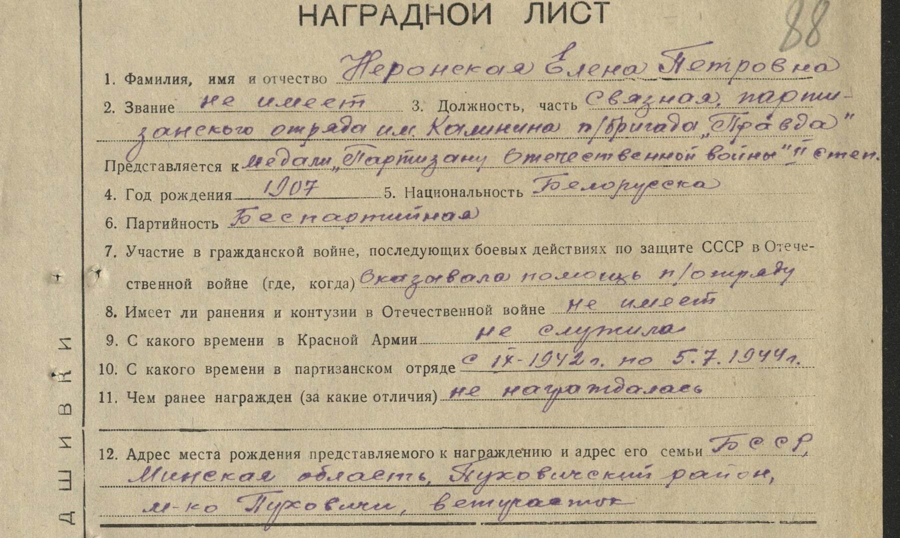
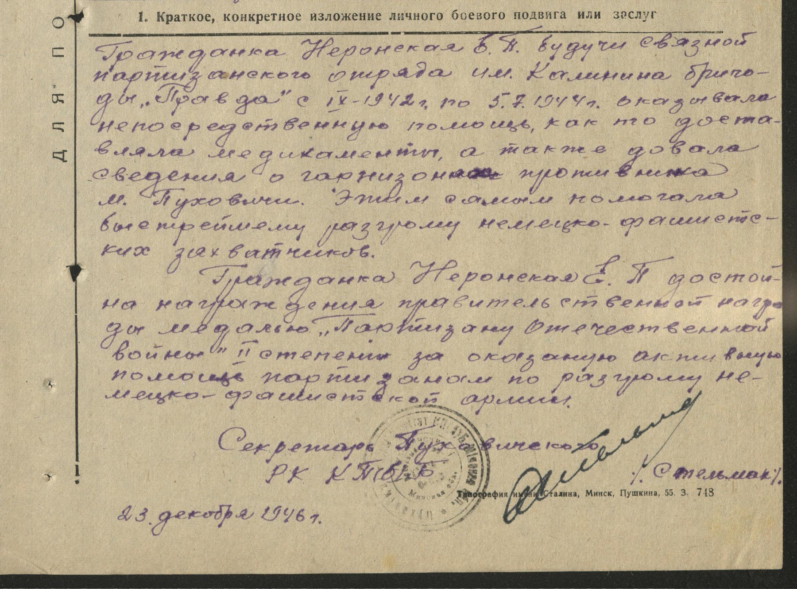
Расшифровка
- 1. Фамилия, имя и отчество
- Неронская Елена Петровна
- 2. Звание
- не имеет
- 3. Должность, часть
- связная партизанского отряда им. Калинина п/бригада «Правда»
- Представляется к
- медали «Партизану Отечественной войны» II степ.
- 4. Год рождения
- 1907
- 5. Национальность
- белоруска
- 6. Партийность
- беспартийная
- 7. Участие в Отечественной войне
- оказывала помощь п/отряду
- 8. Ранения и контузии
- не имеет
- 9. С какого времени в Красной Армии
- не служила
- 10. С какого времени в партизанском отряде
- с IX-1942 г. по 5.7.1944 г.
- 11. Чем ранее награждена
- не награждалась
- 12. Адрес места рождения и семьи
- БССР, Минская область, Пуховичский район, м-ко Пуховичи, ветучасток
Краткое изложение заслуг
Гражданка Неронская Е. П., будучи связной партизанского отряда им. Калинина бригады «Правда» с IX-1942 г. по 5.7.1944 г., оказывала непосредственную помощь, как то доставляла медикаменты, а также давала сведения о гарнизонах противника м. Пуховичи. Этим самым помогала быстрейшему разгрому немецко-фашистских захватчиков.
Гражданка Неронская Е. П. достойна награждения правительственной наградой медалью «Партизану Отечественной войны» II степени за оказанную активную помощь партизанам по разгрому немецко-фашистской армии.
Секретарь Пуховичского РК КП(б)Б [подпись] /[предположительно: Стельмах]/. 23 декабря 1946 г.
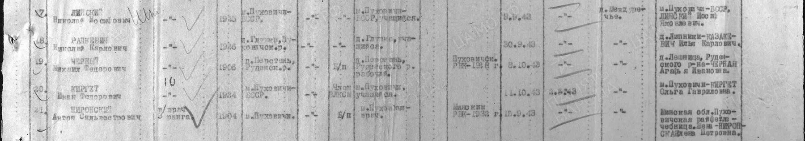
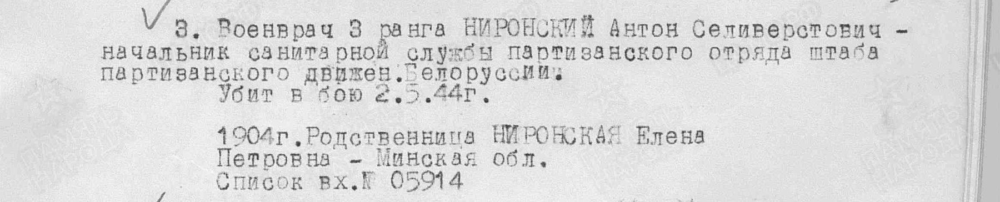
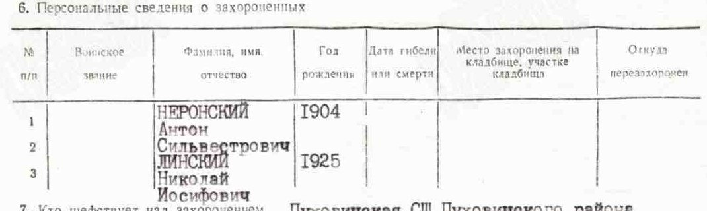

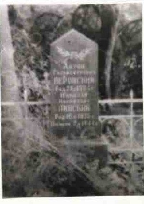
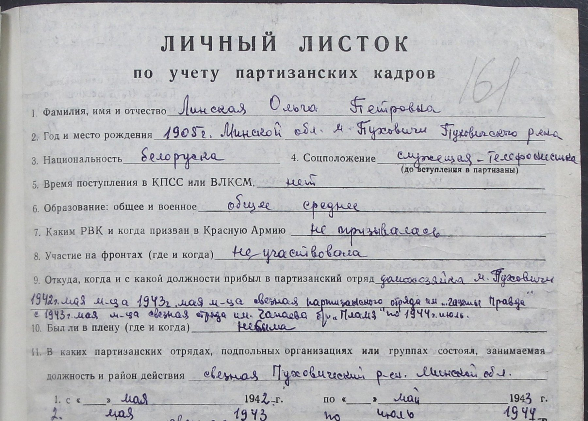
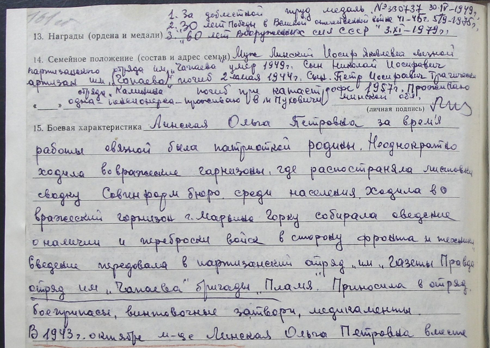
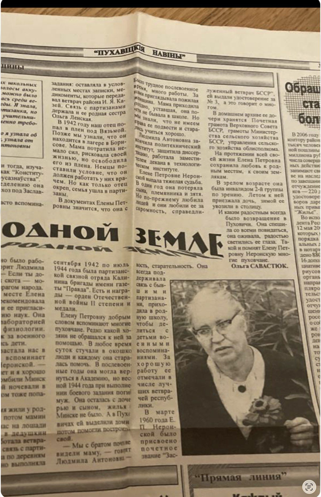
Пётр Петрович Пархомчик, 1917
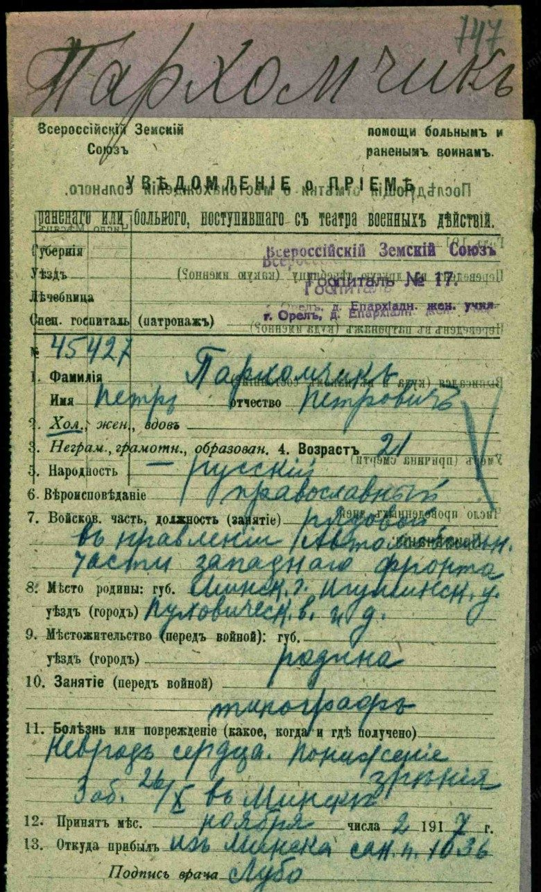
Расшифровка
- Фамилия, имя, отчество
- Пархомчикъ Петръ Петровичъ
- Семейное положение
- холостъ
- Возраст
- 21
- Народность, вероисповедание
- русскій, православный
- Войсковая часть, должность
- рядовой въ Правленіи Автомобильной части Западнаго фронта
- Место родины
- губ. Минск., у. Игуменск., Пуховическ. в[олость]
- Местожительство перед войной
- родина
- Занятие перед войной
- типографъ
- Болезнь
- невроз сердца, понижение зрения; заб[олел] 26/X въ Минске
- Принят
- 2 ноября 1917
- Откуда прибыл
- изъ Минска, сан[итарный] п[оезд] 1036
Метрические книги Пуховичской Рождество-Богородицкой церкви, 1799–1857
Это копии метрических книг, которые церкви ежегодно отсылали в консисторию; они хранятся в Национальном историческом архиве Беларуси (ф. 136, оп. 13) и сфотографированы FamilySearch. Ссылки на FamilySearch открываются после бесплатной регистрации. Квадратные скобки — неуверенное чтение.
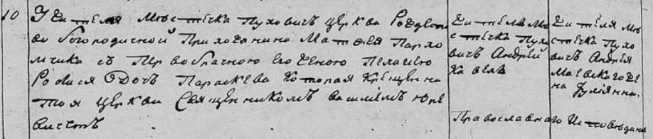

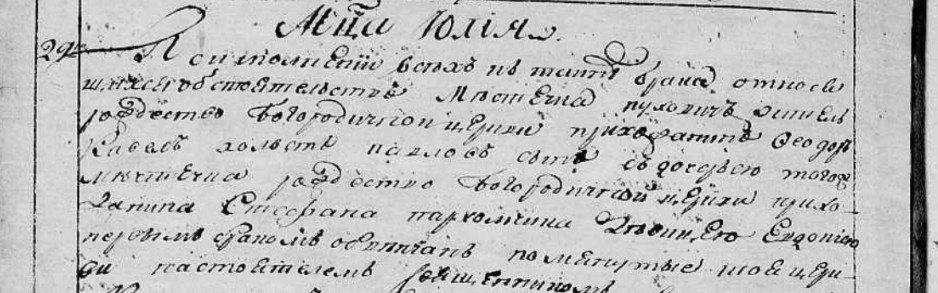
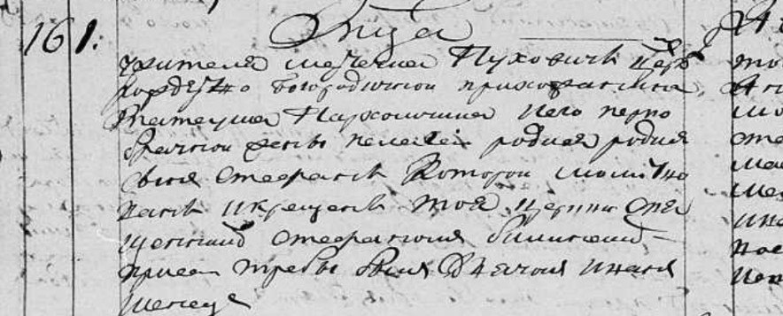

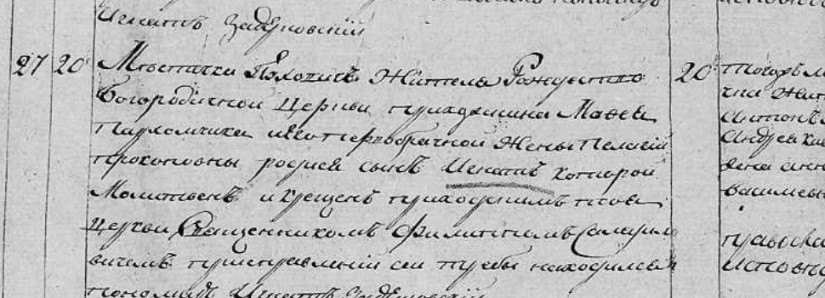

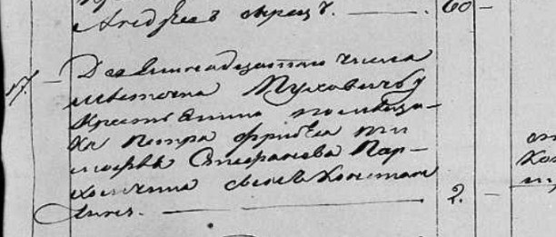

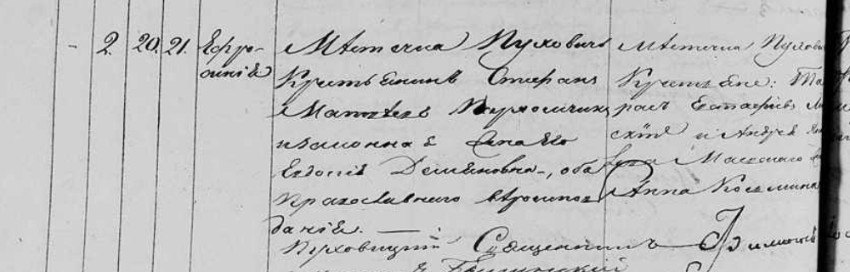

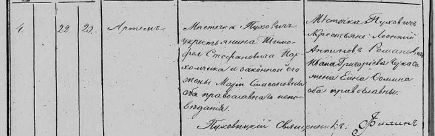

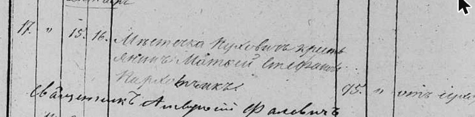

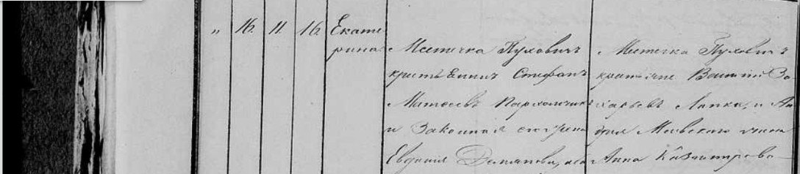

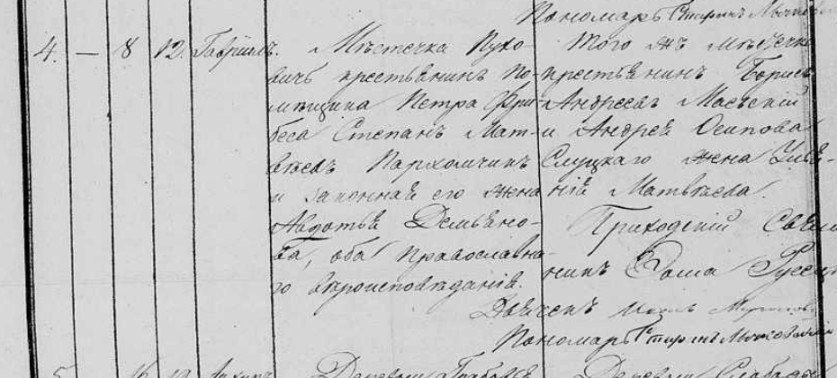

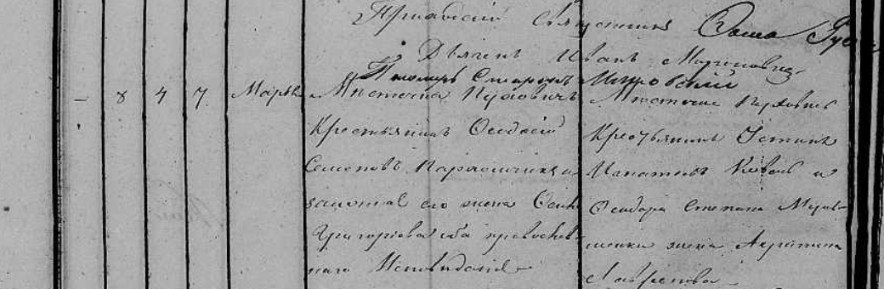

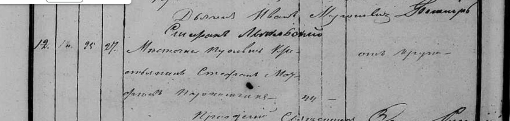

Хронология
| Дата | Событие | Основание |
|---|---|---|
| около 1771 | Рождение Матфея Стефанова Пархомчика (по возрасту при смерти) | метрика 1846 |
| 10.08.1799 | У Матфея и Пелагеи Пархомчиков в местечке Пуховичи родилась дочь Параскева | метрика |
| 29.07.1806 | Евдокия, дочь Стефана Пархомчика, вышла замуж за Феодора Кавела | метрика |
| 1.08.1809 | У Матеуша (Матфея) и Пелагеи родился сын Стефан | метрика |
| 20.12.1819 | Родился Игнатий, сын Матфея и Пелагеи Прокопьевны | метрика |
| 20.01.1838 | У Стефана Матвеева и Евдокии Демьяновны родилась дочь Ефросиния | метрика |
| 15.09.1846 | Умер Матфей Стефанов Пархомчик | метрика |
| 11.12.1851 | Родилась Екатерина, дочь Стефана и Евдокии | метрика |
| 8.02.1856 | Родился Гавриил, сын Степана и Авдотьи | метрика |
| 25.08.1857 | Умер Стефан Матфеев Пархомчик | метрика |
| 1896 | В местечке Пуховичи родился Пётр Петрович Пархомчик | [7] [8] |
| 1904 | В местечке Пуховичи родился Антон Сильвестрович Неронский | донесение 1944 |
| 1905 | Родилась Ольга Петровна, в замужестве Линская | личный листок 1980 |
| 9.01.1907 | В Пуховичах родилась Елена Петровна Пархомчик (27.12.1906 по старому стилю) | сведения семьи; год — наградной лист |
| 2.11.1917 | Рядовой Пётр Петрович Пархомчик, до войны типограф, поступил больным в госпиталь в Орле | карточка |
| 1932 | Антон Неронский призван Минским райвоенкоматом, военврач | донесение 1944 |
| 18.05.1932 | Арест Петра Петровича Пархомчика; 23.09.1932 — пять лет лагерей | [8] |
| 1942 | Антон в плену под Вязьмой, затем в лагере в Борисове; Елена добивается его освобождения | статья |
| IX.1942 | Елена Петровна — связная отряда имени Калинина бригады «Правда» | наградной лист |
| 15.09.1943 | Антон Неронский в партизанском отряде имени Калинина | донесение |
| 2.05.1944 | У деревни Междуречье погибли Антон Неронский и Николай Линский | донесение, приказ |
| 5.07.1944 | Окончание партизанской службы Елены Петровны | наградной лист |
| 23.12.1946 | Наградной лист на медаль «Партизану Отечественной войны» II степени | наградной лист |
| 19.12.1957 | Реабилитация Петра Петровича Пархомчика; в том же году погиб Пётр Линский | [8], личный листок |
| III.1960 | Елене Петровне присвоено звание «Заслуженный ветврач БССР» | статья |
| 15.08.1992 | Паспорт воинского захоронения в Пуховичах: Неронский и Линский | паспорт |
Что дальше
Основные ответы теперь лежат в архивах, а не в интернете:
- Национальный исторический архив Беларуси (Минск). Метрические книги Пуховичской Рождество-Богородицкой церкви: рождение Ольги (1905) и Елены (декабрь 1906 года по старому стилю), брак их родителей и записи 1860–1895 годов, которые свяжут отца Елены с Пархомчиками XIX века. Там же — ревизская сказка 1858 года по местечку Пуховичи и дело о дворянстве Неронских.
- Архив КГБ Беларуси. Следственное дело № 21002-с на Петра Петровича Пархомчика (1932). В анкете арестованного обычно перечислены родители, братья и сёстры. Дело выдают родственникам по запросу.
- Записи ЗАГС. Запись о смерти Елены Петровны и записи о детях — дата смерти не установлена.
- «Памятная книжка Минской губернии» 1904 года, с. 141. Там упомянут Василий Пархомчик в связи с Пуховичами, его должность не прочитана.
Проверено, но не подтвердилось
- Кондратий Петрович Пархомчик, 1901 года рождения, из деревни Боровая Слобода Пуховичского района — запись в списках запасного полка («Память народа»). С семьёй Елены его ничто не связывает, кроме отчества; родственники в документе не указаны. не установлено
- «Неронские герба Лебедь». Такое утверждение встречается в пересказах поисковых систем, но ни одного источника, где оно было бы написано, найти не удалось. Описание собственного герба Неронских в доступных гербовниках отсутствует. не подтвердилось
- Пётр Пархомчик, рождённый в 1835–1860 годах (возможный отец Елены), в индексе метрик Минской губернии не найден. Индекс охватывает не все годы и приходы, так что это не значит, что записи нет.
Источники
- Наградной лист на Неронскую Елену Петровну, 23 декабря 1946 года. НАРБ; электронная копия — база «Партизаны Беларуси», карточка 101111.вырезкаскан
- Ольга Савастюк. «…родной земле» // «Пухавіцкія навіны», дата выпуска не установлена (на странице — заметка о 2006 годе). Фото страницы — семейный архив.статья
- Донесение о безвозвратных потерях партизанского отряда имени Калинина, именной список, стр. 2, №№ 17 и 21. ЦАМО; «Память народа», документ.вырезкаскан
- Приказ ГУК ВС СССР № 02706 от 6 декабря 1946 года, п. 3. ЦАМО, ф. 33, оп. 563783, д. 43; «Память народа», документ.вырезкаскан
- Паспорт воинского захоронения, Пуховичи, кладбище, 15 августа 1992 года, лист 2. «Память народа», документ.вырезкаскан
- Документы по учёту партизанских кадров на Линскую Ольгу Петровну, 1980 год (заявление, личный листок, подтверждения), 14 листов. НАРБ; «Партизаны Беларуси», карточка 250287.вырезкаскан
- Уведомление о приёме больного: Пархомчик Пётр Петрович, 2 ноября 1917 года. РГВИА, картотека бюро учёта потерь в Первой мировой войне, ящик 2802-П; «Памяти героев Великой войны».карточка
- Пархомчик Пётр Петрович (1896). «Открытый список», запись; основание — архив КГБ РБ, дело 21002-с.
- Метрические книги Рождество-Богородицкой церкви местечка Пуховичи Игуменского уезда, 1798–1860. НИАБ, ф. 136, оп. 13; микрофильмы FamilySearch, каталог, коллекция «Belarus, Minsk Church Books, 1700–1965».
- Карточки Первой мировой войны на Пархомчиков Минской губернии (60 карточек), в том числе Василий, Павел и Виктор Ефимовичи из местечка Пуховичи. «Памяти героев Великой войны».
- Генеалогическая база «Жніво»: Пархомчики Пуховичского, Игуменского и Червенского районов (перепись 1926 года, списки партизан и военнослужащих, «Памятная книжка Минской губернии» 1904–1906). db.zhnivo.com.
- Алфавитный список дворянским родам Минской губернии. Минск, 1903, с. 77. НИАБ.
- Малы гербоўнік рагачоўскай шляхты (по публикациям журнала «Архіварыус»): «Nierońscy — własnego». lyczkowski.net.
- Сведения семьи: дата рождения Елены Петровны (9 января 1907 года по новому стилю), девичья фамилия, родство с семьёй Медковых.